Planar primitives
This section covers planar primitives. They are usually combined with 3D operations to build solids with complex geometry.
Rectangle
A rectangle is defined by two side lengths. Omit the second length to build a square. The center option places its geometric center at the origin. With wire, the result is a rectangular wire instead of a filled face.
Signature:
rectangle(x, y, center=False, wire=False)
rectangle(a, center=False, wire=False)
square(a, center=False, wire=False) #alternate
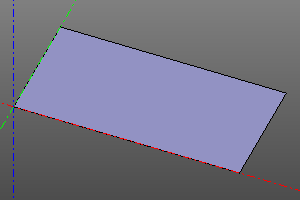
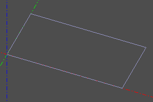
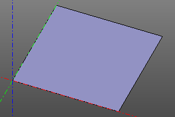
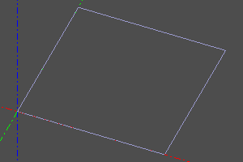
Circle and disk
A circle is defined by its radius r. The optional angle parameter creates a sector or an arc. With wire, the result is a circular wire instead of a filled disk.
Signature:
circle(r=radius, wire=False)
circle(r=radius, angle=angle, wire=False)
circle(r=radius, angle=(start, stop), wire=False)
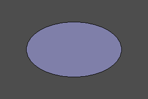
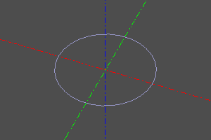
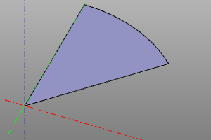
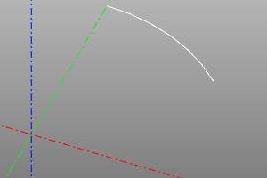
Ellipse
An ellipse is defined by two radii, with r1 greater than r2. To build a sector, pass an angle or a pair of angles as the optional angle parameter. With wire, the result is a wire instead of a filled face.
Signature:
ellipse(r1=major, r2=minor, wire=False)
ellipse(r1=major, r2=minor, angle=angle, wire=False)
ellipse(r1=major, r2=minor, angle=(start, stop), wire=False)
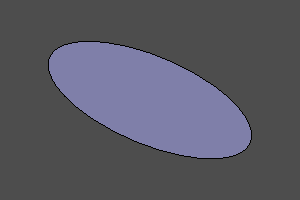
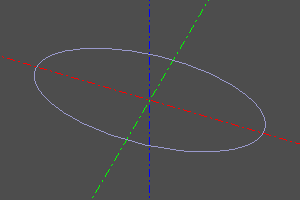
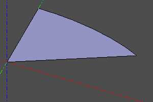
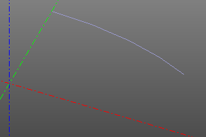
Polygon
A polygon is defined by its vertices. With wire, the result is a wire instead of a filled face, equivalent to a closed polysegment. pnts is an array of vertex coordinates.
Signature:
polygon(points=pnts, wire=False)
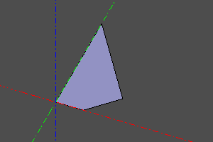
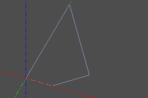
Regular polygon
A regular polygon is defined by its radius and number of vertices. With wire, the result is a wire instead of a filled face.
Signature:
ngon(r=radius, n=vertexCount, wire=False)
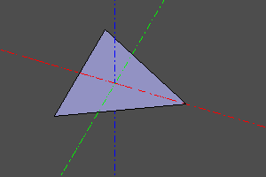
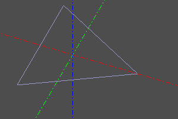
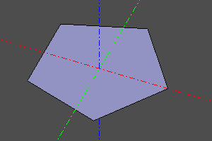
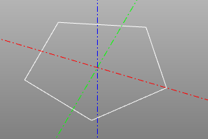
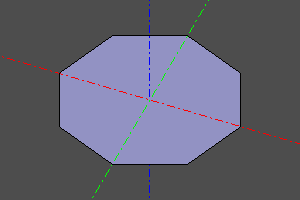
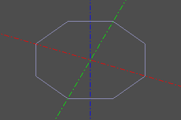
Text
Returns a Compound of character faces from the string text, font name fontname and font size size. The font is selected from those registered in the system. Use register_font to register additional fonts. The composite_curve option reduces the number of constituent objects by increasing their complexity.
Signature:
textshape(text, fontname, size, composite_curve=False)
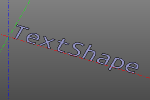
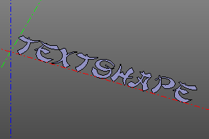
Infinite plane
An infinite plane is a special geometric object used in operations on other objects. It cannot be displayed directly.
Signature:
infplane()
Example (conic sections):
cone(r1=5, r2=0, h=10, center=True) ^ infplane()
cone(r1=5, r2=0, h=10, center=True).rotX(deg(45)) ^ infplane()
cone(r1=5, r2=0, h=10, center=True) ^ infplane().rotX(deg(45))
cone(r1=5, r2=0, h=10, center=True) ^ infplane().rotX(deg(90)).right(3)
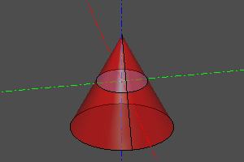
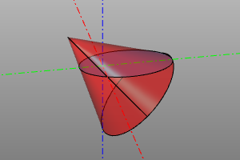
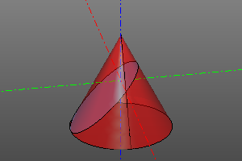
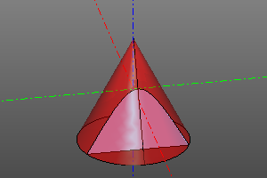
Filling a wire
This operation turns a closed planar wire into a face.
Signature:
fill(wire)
wire.fill() #alternate
Example:
wire = sew([
segment((0,0,0), (0,10,0)),
circle_arc((0,10,0),(10,15,0),(20,10,0)),
segment((20,0,0), (20,10,0)),
segment((20,0,0), (0,0,0))
])
fill(wire)
| Before | After |
|---|---|
 |
 |
Interpolating a surface through a grid of points
Builds a B-spline surface by interpolating a two-dimensional array of points, supplied as a nested list.
degmin and degmax set the minimum and maximum degree of the interpolation polynomial.
Signature:
interpolate2(pnts, degmin=3, degmax=7)
Example:
POINTS = points2([
[(0,0,0), (10,0,7), (20,0,5)],
[(0,5,0), (10,5,7.5), (20,5,7)],
[(0,10,2), (10,10,8), (20,10,5)],
[(0,15,1.3), (10,15,8.5), (20,15,6)],
])
m = interpolate2(POINTS)
disp(m)
disp(POINTS, color=color.red)
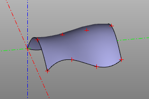